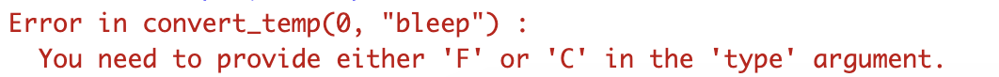

install.packages(c("tidyverse", "nycflights13"))Data Programming
Set up
To complete this session, you need to load in the following R packages:
Install packages
To install new R packages, run the following (excluding the packages you have already installed):
Introduction
You have been introduced to a number of R functions that have been wonderfully helpful in allowing you to write concise code. However, you may sometimes find yourself wanting a new function that doesn’t yet exist. It may be because you have to repeat a task very specific to your work, or because no one else has taken the time to write a function that solves a common problem.
This session, I will introduce programming in R to you. You will be able to write your own R functions that will help keep your code concise and robust. I will also point you towards some resources that will help you write your own R package so you can share your code with others.
Let’s get started!
A common problem
Good R code is concise and robust. But sometimes we need to perform the same task across many different data frames or numbers.
For example, let’s return to our data on the weather at NYC airports:
weather# A tibble: 26,115 × 15
origin year month day hour temp dewp humid wind_dir wind_speed
<chr> <int> <int> <int> <int> <dbl> <dbl> <dbl> <dbl> <dbl>
1 EWR 2013 1 1 1 39.0 26.1 59.4 270 10.4
2 EWR 2013 1 1 2 39.0 27.0 61.6 250 8.06
3 EWR 2013 1 1 3 39.0 28.0 64.4 240 11.5
4 EWR 2013 1 1 4 39.9 28.0 62.2 250 12.7
5 EWR 2013 1 1 5 39.0 28.0 64.4 260 12.7
6 EWR 2013 1 1 6 37.9 28.0 67.2 240 11.5
7 EWR 2013 1 1 7 39.0 28.0 64.4 240 15.0
8 EWR 2013 1 1 8 39.9 28.0 62.2 250 10.4
9 EWR 2013 1 1 9 39.9 28.0 62.2 260 15.0
10 EWR 2013 1 1 10 41 28.0 59.6 260 13.8
# ℹ 26,105 more rows
# ℹ 5 more variables: wind_gust <dbl>, precip <dbl>, pressure <dbl>,
# visib <dbl>, time_hour <dttm>This data frame includes information about the temperature at each airport. It is recorded in degrees Fahrenheit. I - as an Australian - don’t know what to do with these huge numbers! I need to convert them to the much more sensible degrees Celsius so I can understand them better. The conversion from Fahrenheit to Celsius is done according to this formula:
\[ C = \frac{F - 32}{\frac{9}{5}} \]
So, to convert each temperature data point from F to C, I could do the following:
transmute(weather, origin, time_hour, temp_f = temp, temp_c = (temp - 32) / (9/5))# A tibble: 26,115 × 4
origin time_hour temp_f temp_c
<chr> <dttm> <dbl> <dbl>
1 EWR 2013-01-01 01:00:00 39.0 3.9
2 EWR 2013-01-01 02:00:00 39.0 3.9
3 EWR 2013-01-01 03:00:00 39.0 3.9
4 EWR 2013-01-01 04:00:00 39.9 4.4
5 EWR 2013-01-01 05:00:00 39.0 3.9
6 EWR 2013-01-01 06:00:00 37.9 3.3
7 EWR 2013-01-01 07:00:00 39.0 3.9
8 EWR 2013-01-01 08:00:00 39.9 4.4
9 EWR 2013-01-01 09:00:00 39.9 4.4
10 EWR 2013-01-01 10:00:00 41 5
# ℹ 26,105 more rows
Tip
transmute() combines mutate() and select(). It’s very handy!
Alternatively, I could write a function that includes that formula and then apply that function to my vector of temperature values.
f_to_c <- function(f) {
c <- (f - 32) / (9/5)
return(c)
}Let’s try our new function out:
f_to_c(32)[1] 0f_to_c(100)[1] 37.77778f_to_c(50)[1] 10Looking good! Now, let’s apply it to our data:
transmute(weather, origin, time_hour, temp_f = temp, temp_c = f_to_c(temp))# A tibble: 26,115 × 4
origin time_hour temp_f temp_c
<chr> <dttm> <dbl> <dbl>
1 EWR 2013-01-01 01:00:00 39.0 3.9
2 EWR 2013-01-01 02:00:00 39.0 3.9
3 EWR 2013-01-01 03:00:00 39.0 3.9
4 EWR 2013-01-01 04:00:00 39.9 4.4
5 EWR 2013-01-01 05:00:00 39.0 3.9
6 EWR 2013-01-01 06:00:00 37.9 3.3
7 EWR 2013-01-01 07:00:00 39.0 3.9
8 EWR 2013-01-01 08:00:00 39.9 4.4
9 EWR 2013-01-01 09:00:00 39.9 4.4
10 EWR 2013-01-01 10:00:00 41 5
# ℹ 26,105 more rowsHow to write a function
The function we wrote above has three important parts:
- A name:
f_to_c. Names should be informative and easy to type. -
Arguments:
f. Arguments are the variables the user will supply to the function. Here, we allow the user to supply a temperature in Fahrenheit. - A body. This includes the code that will run when the function is called.
You create a function by following the template:
name <- function(arguments) {
body
}A more robust function
It would be nice if we could allow the user to provide temperatures in either Fahrenheit or Celsius. Let’s create a more complex but useful function:
Let’s try this out:
convert_temp(0, "C")[1] 32convert_temp(32, "F")[1] 0convert_temp(50, "C")[1] 122convert_temp(122, "F")[1] 50Looks like it is working!
We have included some restrictions on our arguments: users can only supply one of two values: “C” or “F”. However, we have not written very robust code yet. Let’s see what happens when we include something other than “F” or “C” as the type argument:
convert_temp(0, "Z")[1] 32convert_temp(50, "bloop")[1] 122convert_temp(100, "bleep")[1] 212Huh… it appears that our function is accepting those values as “C”. That’s because we allowed anything other than “F” to be treated as “C”. Let’s fix that:
First, let’s check that it still works as expected:
convert_temp(0, "C")[1] 32convert_temp(32, "F")[1] 0And then let’s check what happens when we supply a different value for type:
convert_temp(0, "bleep")
Great! Not only does the function refuse to provide any output, it also gives the user a helpful error message.
R packages
You can create functions that perform all kinds of very complex tasks. For example, you can write a function that takes entire data frames, fits models against those data frames, and provides summary statistics and various plots of those models. These more complex functions follow the same format introduced to you above. As you build your R skills, you will find more opportunities to write increasingly complex and robust functions.
You should not keep those functions to yourself! You should share them with others, who may also be struggling with verbose code. If you have a group of functions that perform similar tasks, you should write them up into an R package. For example, you might want to write a series of functions that perform common conversions. You can add a weight converter to the temperature converter we wrote above.
R packages require a little bit more work. For example, you need to provide all that helpful documentation you have been referring to when using others’ functions. You will also need to run a series of robustness checks to make sure users’ code doesn’t break if they add something unusual to your functions.
However, packages can be very rewarding to produce. For example, I hope you have found polisciols very helpful! I also had the opportunity to work with the UN and some amazing R coders to write comtradr, an R package that allows users to access the UN Comtrade API from R. There are many opportunities to work with organizations and others when coding in R.
To get started building your own R packages, you should check out the helpfully titled R Packages by Hadley Wickham (of R4DS fame) and Jennifer Bryan.